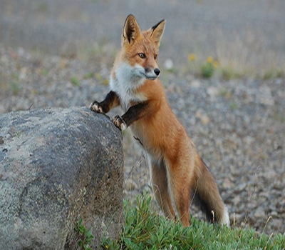
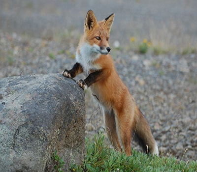

Sierra de Guadarrama

La sierra de Guadarrama es una alineación montañosa perteneciente a la mitad este del sistema Central, una cordillera del interior de la península ibérica. Se sitúa entre las sierras de Gredos y de Ayllón, extendiéndose en dirección suroeste-noreste en las provincias españolas de Madrid, al sureste, y Segovia y Ávila, al noroeste. Mide aproximadamente 80 km de longitud y su pico más alto es Peñalara con 2428 m. Hace de división entre las cuencas del Duero, al noroeste, y del Tajo, al sureste.
La flora de esta sierra se caracteriza por la abundancia de bosques de pino silvestre y la presencia de robledales de rebollo y encinares en zonas más bajas. En las cumbres predominan los pastizales y arbustos de alta montaña. En estos ecosistemas abundan mamíferos como ciervos, jabalíes, cabras montesas, corzos, gamos, tejones, varios mustélidos, gatos monteses, zorros y liebres. Hay una gran cantidad de especies de aves acuáticas en los embalses, y grandes rapaces como el águila imperial o el buitre negro, entre otras.
Atravesadas por muchos puertos y hoy en día también por vías ferroviarias, estas montañas tienen una notable afluencia de montañeros y turistas, lo que hace que las infraestructuras para el turismo y los deportes de montaña estén muy desarrolladas, condición peligrosa en ocasiones para el medio ambiente.


 
